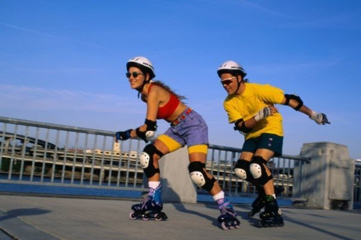

Катання на роликах. Як кататися з користю?
Катання на роликах – дуже приємний і корисний вид спорту, який тренує м’язи ніг і допомагає підтримувати себе у відмінній формі. Їзда на роликах дарує людині відчуття свободи і впевненості в собі. Дізнайтеся, як кататися на роликах з максимальною користю.
Роликові ковзани з’явилися ще в 17 столітті, і з тих пір сотні мільйонів людей по всьому світу пристрастилися до «черевиків на колесах». Катання на роликах надає людині відчуття свободи, а також тренує м’язи ніг і допомагає підтримувати фігуру. Давайте розберемося, як кататися на роликах з максимальною користю для свого здоров’я.
У чому кататися на роликах
Для роллера найголовніше – комфорт. Для катання на роликах слід вибирати зручний, який не стискує рухів, одяг.
Обов’язково потрібно пам’ятати про спеціальну екіпіровку. Навіть спортсмени з великим досвідом завжди надягають шолом, налокітники та наколінники, перш ніж стати на ролики.
Які ролики вибрати
Для початку потрібно визначитися зі стилем катання на роликах. У спеціалізованих магазинах продається велика кількість різних видів роликів: для швидкісного катання, слалому або простого катання в умовах міста.
Найкраще порадитися з продавцем-консультантом, і підібрати для себе оптимальний варіант. Пам’ятайте, що роликові ковзани ні в якому разі не повинні тиснути на пальці, нозі повинно бути комфортно в черевиках.
Де кататися на роликах
Катання на роликах – це спорт з високим ступенем ризику. Якщо ви новачок, то для початку краще на прямій дорозі покритою асфальтом або спеціальним покриттям. Спочатку краще приділити катанню на роликах не більше 20-30 хвилин. Інтенсивне тренування ніг обов’язково дасть про себе знати крепатура на наступний день.
Місцевість з нахилами, підйомами і частими поворотами може бути небезпечною. Також намагайтеся не кататися на мокрому асфальті, оскільки в такому випадку висока ймовірність посковзнутися.